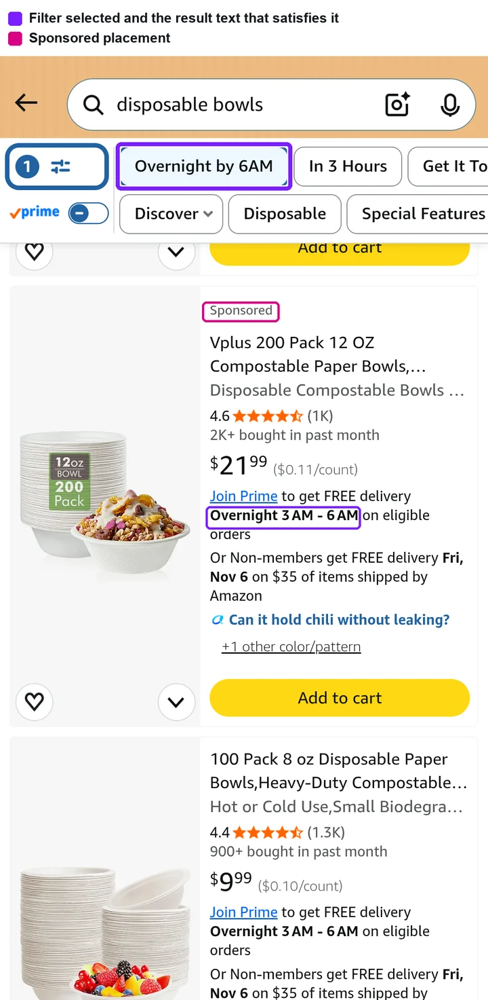
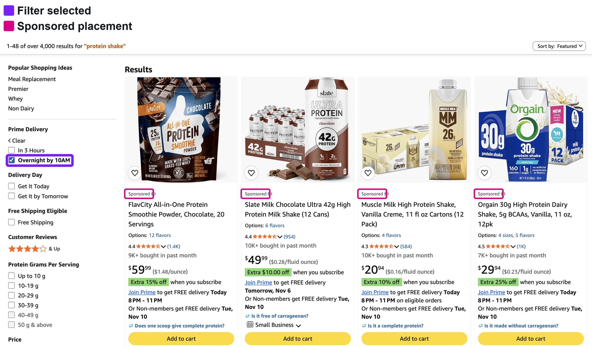
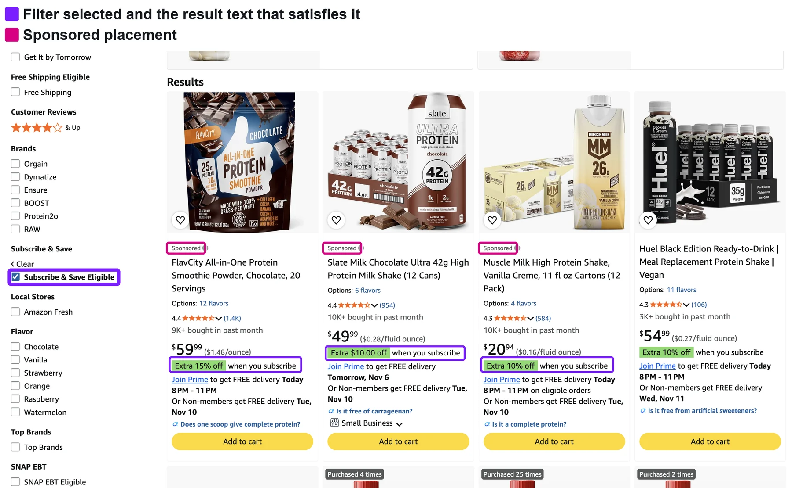

filter selected and the result text that satisfies itSponsored label
Pick a brand, scroll the results: the sponsored placements match the filter.


Delivery speed: the filter and the delivery promise it matches.


Desktop, delivery speed: four sponsored placements on a filtered page.


Desktop, Subscribe & Save: each sponsored result carries the offer the filter asked for.
Filtered result pages served no sponsored ads, and supporting each new filter took 12+ weeks of bespoke engineering.
Owned the joint goal between Sponsored Ads and Retail Search, prototyped the integration, and led the auction-stage experiment across three teams, then the worldwide rollout.
+0.3% Sponsored Products revenue, about $88MM projected annual. New filters are now supported on launch day.